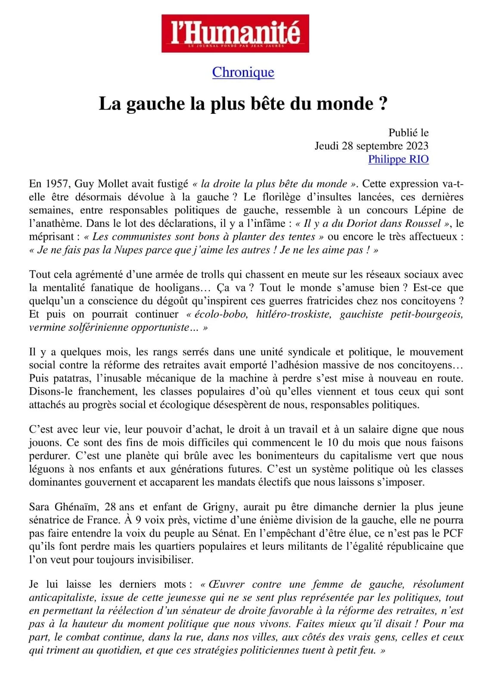

Publication d’archives
Chronique de Philippe Rio, publiée dans l'Humanité.
Date indiquée par Facebook · 30 septembre 2023
Texte conservé avec la publication
Chronique de Philippe Rio, publiée dans l'Humanité.
Philippe Rio, diplômé du Cycle d'urbanisme, a été élu « meilleur maire du monde » par la City Mayors Foundation, une organisation à but non lucratif. Le maire PCF de Grigny préside la branche française du réseau international Maires pour la Paix et s'est engagé depuis plusieurs années en faveur des banlieues populaires.
"Sommes-nous la gauche la plus bête du monde? Quelqu’un a conscience du dégoût qu’inspirent chez nos concitoyens les guerres fratricides? C’est avec leur vie que nous jouons. C’est la planète que nous laissons brûler. Ce sont les classes dominantes que nous laissons gouverner…"

Sources
Archive rouge · export Facebook · AR-0002-FB-01574
À lire aussi · La manif pour tous est de retour. Elle est même au gouvernement.